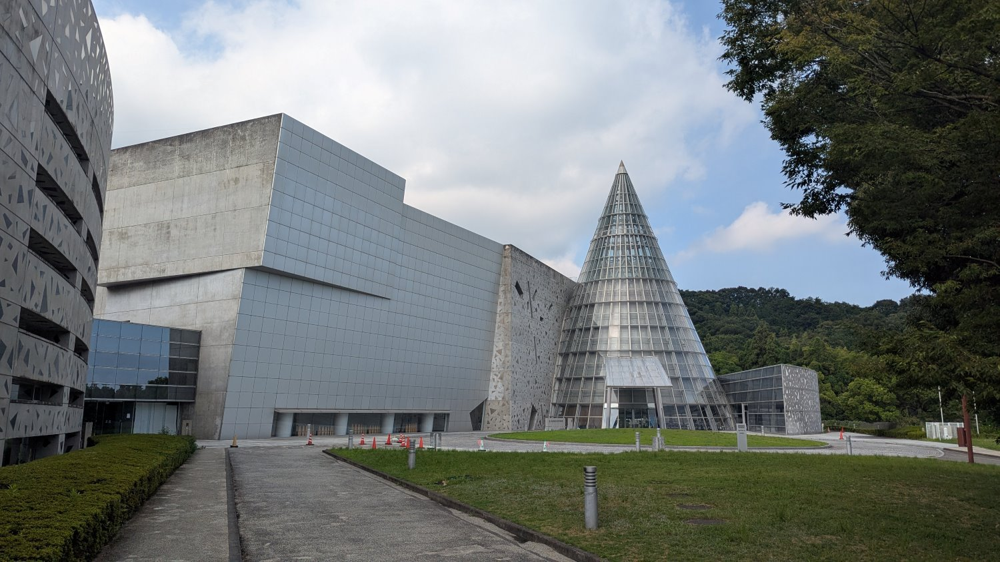

展覽場館
日本的展覽場館，是集結了知識性與娛樂性的探索空間，引領人們深入了解自然生態的奧秘與科學技術的發展。無論是展示著繽紛海洋生態的水族館，還是以互動體驗方式解說科學原理的博物館，都為大小朋友帶來充滿驚奇與啟發的時光。這些場館不僅是寓教於樂的絕佳去處，更展現了日本在展覽設計與知識傳遞上的獨到匠心。

Jump 快閃店
我們在愛媛縣松山市最大的購物中心「EMIFULL MASAKI」購物時剛好遇到JUMP快閃商店(只有1週)，熱愛動漫的我們當然是要進去逛一下拍個照啦！

毛巾美術館
毛巾美術館全球首座以毛巾為主題的美術館，宗旨是成為「療癒身心靈的珍藏之地」，來到愛媛當然要來這個毛巾美術館參觀一下，裡頭不僅詳細解說毛巾的製造過程，還展示了各種以毛巾為題材的藝術作品。

愛媛縣綜合科學博物館
愛媛縣綜合科學博物館是個可以透過體驗來學習科學的大寶庫，館內不僅分為自然、科學技術與產業三大主題展區，更擁有世界最大等級的巨蛋天象儀，讓您彷彿身歷其境般地遨遊於浩瀚星空之中。

四國水族館
香川縣熱門景點之一，雖然規模不大，但裡面的動物種類非常豐富，利用四國多樣態的自然資源與海洋環境作為展示的基底，讓參觀者可以體驗到四國擁有多麼豐富的動物生態系。
留言板